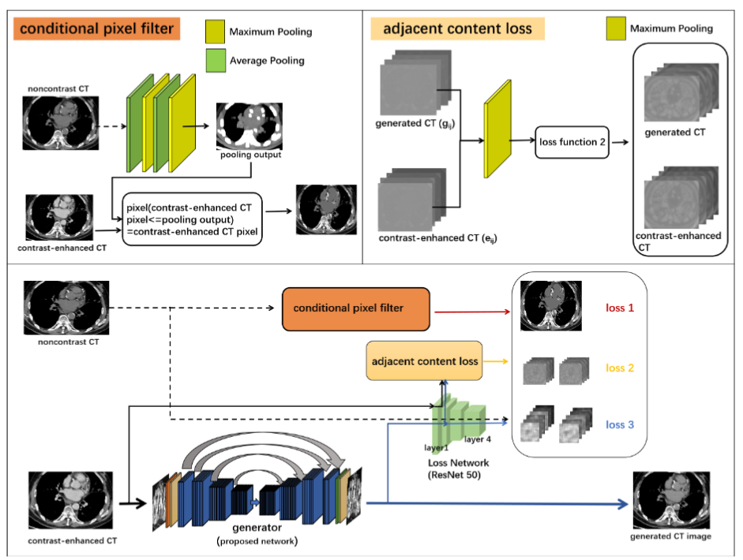

|
Xianfan Gu I am a research engineer at Shanghai Qizhi Institute, where I work on representation learning and generative model. At Shanghai Qizhi I've worked on fine-grained representation learning with Self-supervised Transformer. I've also worked on Video Generative / Multi-modal Generation using Diffusion Model or Autoregressive Model. My current researches mainly lie on 2D/3D generative model, Multi-modal/Language-Vision Model, Self-supervised Learning, etc,. |

|
ResearchI'm interested in computer vision, medical image processing, autoregressive models, and multi-modality generation. Much of my research is about extracting dense semantic or high-level representation from images for image transformation (CT->MRI, semantic segmentation, etc), some research is about aligning the visual tokens with text embedding for large-scale text-visual generation or retrieval. |

|
Seer: Language Instructed Video Prediction with Latent Diffusion Model
Xianfan Gu, Chuan Wen, Jiaming Song, Weirui Ye, Yang Gao In Submission project page / arXiv Inflate 2D pre-trained text-to-image latent diffusion model to 3D video model for language-guided video prediction, generate coherent and high-quality video clip with refined sub-instruction optimization. |

|
Self-Supervised Vision Transformers for Semantic Segmentation
Anonymous In Submission Design a novel multi-scaled self-supervised framework with a hierarchical transformer network and decoder to capture fine-grained representation. |
|
A Hypothetical Framework of Embodied Generalist Agent with Foundation Model Assistance
Weirui Ye, Yunsheng Zhang, Xianfan Gu, Yang Gao Embodied AI Workshop - CVPR 2023 Present a framework that integrates the prior knowledge from the video foundation model into each component of the actor-critic algorithms for the generalist agents. |
|
|
Cross-modality image translation: CT image synthesis of MR brain images using multi generative network with perceptual supervision
Xianfan Gu, Yu Zhang, Wen Zeng, Sihua Zhong, Haining Wang, Dong Liang, Zhenlin Li, Zhanli Hu Computer Methods and Programs in Biomedicine (2023, JCR-Q1) Combine a novel structural alignment supervision with a cycle-consistency generative network to tackle registration and structural misalignment in CT/MRI image transformation. |
|
|  |
Contrast-enhanced to noncontrast CT transformation via an adjacency content-transfer-based deep subtraction residual neural network
Xianfan Gu*, Zhou Liu*, Jinjie Zhou, Honghong Luo, Canwen Che, Qian Yang, Lijian Liu, Yongfeng Yang, Xin Liu, Hairong Zheng, Dong Liang, Dehong Luo, Zhanli Hu [* indicates equal contribution] Physics in Medicine and Biology (2021, JCR-Q2) Present a supervised algorithm that learns the attenuation from noncontrast CT based on style transfer U-Net. |
Miscellanea |
|
Clone from this website's source code. Thanks for sharing!. |